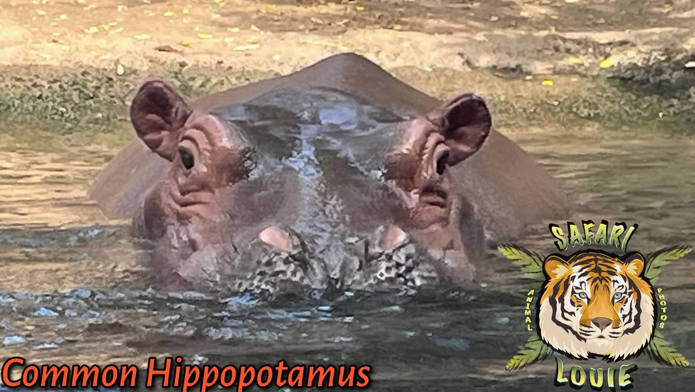

Fiona the Hippo
Cincinnati Zoo & Botanical Garden · In memory
Sad news from Cincinnati: Fiona the hippo has passed away. I shared this photo of her in the water, head and back just above the surface, as a way to remember her. She meant so much to so many of us, and this one is for Fiona.

Sad news from Cincinnati — Fiona the hippo has passed away.
I shared this photo with the news: a common hippopotamus partially submerged in the water, its head and back visible above the surface, labelled in my photo, as always, with the species name and my Safari Louie mark.
I posted this on Facebook — open the original post → · same tour on Instagram